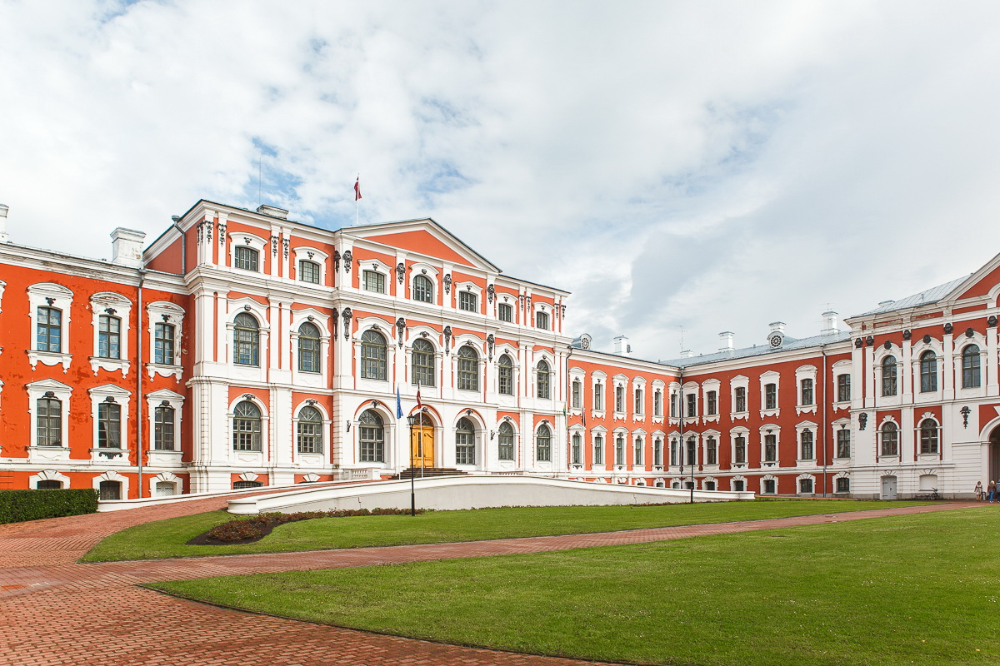

7 mīti par LLU jeb ko Tu nezināji par universitāti Jelgavā Latvijas Lauksaimniecības universitāte (LLU) ir viena no mītiem apvītākajām universitātēm Latvijā. Vai nu seno tradīciju, atrašanās vietas vai neizskaidrojamu citu iemeslu dēļ tā daudzos prātos raisa sapņu un fantāziju mošanos.
1. LLU atrodas dziļi Latvijas laukos. Ja vien vārds "Jelgava” kādam asociējas ar laukiem, nevis ceturto lielāko pilsētu Latvijā, iespējams, kaut kāda patiesība šajā mītā ir meklējama. Bet ja nopietni – LLU atrodas Jelgavā, 40 km attālumā no galvaspilsētas Rīgas un tā ir viegli sasniedzama ar jebkāda veida transportu – automašīnu, autobusu, vilcienu vai pat nelielu kuģīti vai lidmašīnu. Jā, tieši tā – Lielupe, kuras krastā ir izvietota LLU, ir kuģojama upe, un Jelgavā ir arī savs lidlauks.
2. Visa LLU "ietilpst” Jelgavas pilī. Unikālā, barokālā laikmeta Jelgavas pils ir lielākā pils Baltijā. Visi ar LLU saistītie to parasti sauc par savām mājām, taču par spīti tās iespaidīgajiem apmēriem visiem LLU studentiem un fakultātēm tajā vietas nepietiek. Patiesības labad jāsaka, ka šobrīd Jelgavas pilī izvietotas tikai divas no astoņām fakultātēm – Informācijas tehnoloģiju un Lauksaimniecības fakultātes – un universitātes administrācija, bet pārējās veido savdabīgu universitātes pilsētiņu Jelgavā un atrodas dažādās ēkās netālu no tās. Bet ja ne visi LLU studenti, tad grandiozā Rundāles pils gan lieluma ziņā "ietilptu” Jelgavas pils pagalmā.
3. LLU sagatavo speciālistus tikai vienā, šaurā nozarē. LLU vēsturiski ir veidojusies kā lauksaimniecības akadēmija, un tieši šīs tradīcijas dēļ universitāte nes ar vienu nozari saistītu nosaukumu. Bet līdzīgi kā ir mainījusies Latvijas tautsaimniecības struktūra, kurā no lauksaimniecības kā galvenā ekonomikas virzītājspēka 20. gs. sākumā ir notikusi pāreja uz daudznozaru ražošanu 20. gs. beigās, mainījusies arī universitātes būtība. Latvija vairs nav agrāra valsts, tāpat kā lauksaimniecības nozare nav vienīgā, kurā jaunieši var gūt zināšanas, studējot LLU. Patiesībā universitāte šodien studētgribētājiem piedāvā vairāk kā 60 studiju programmas vienā no trijiem īstenotajiem virzieniem – biozinātnēs, inženierzinātnēs vai sociālajās zinātnēs.
